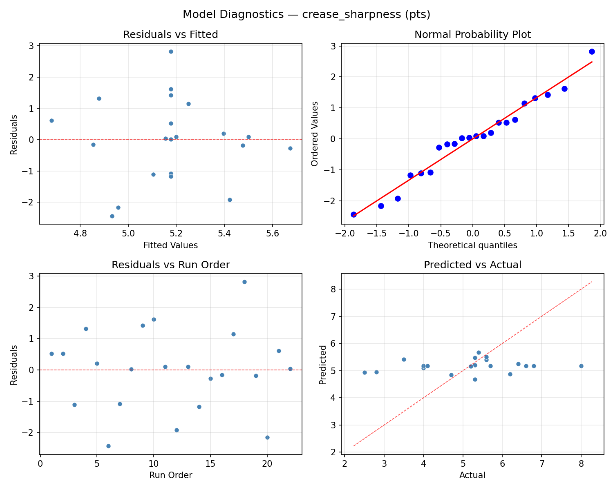
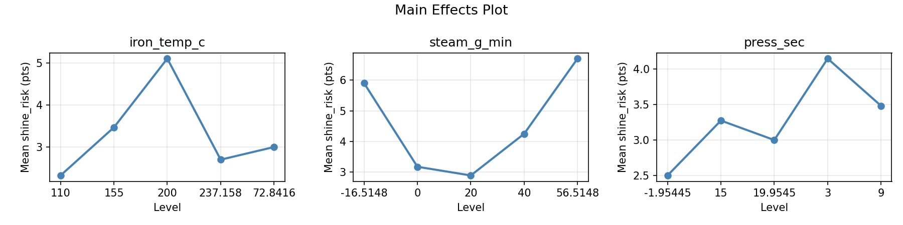
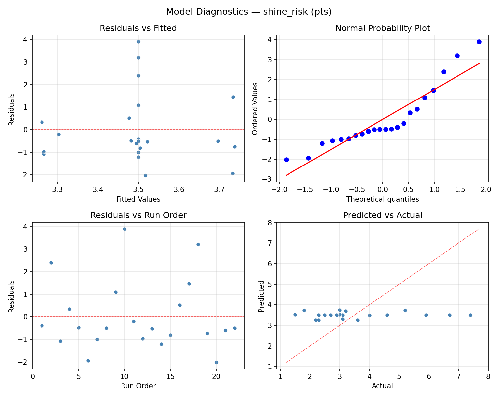
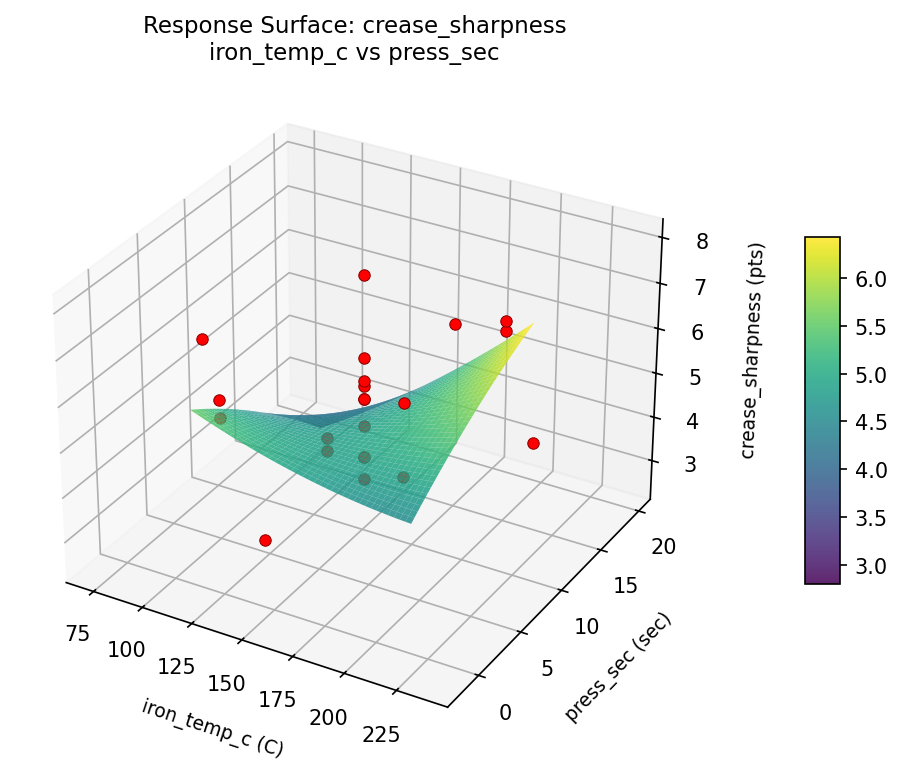
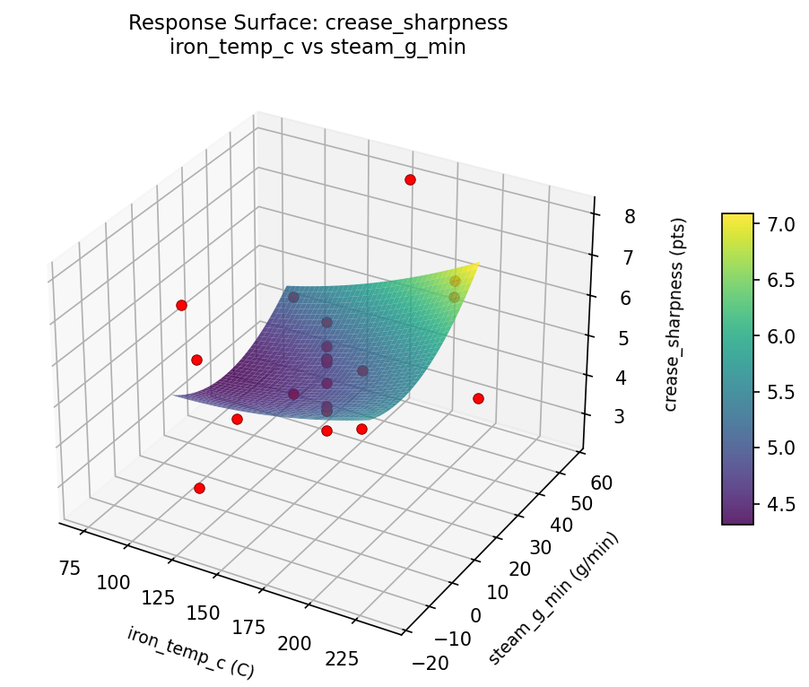
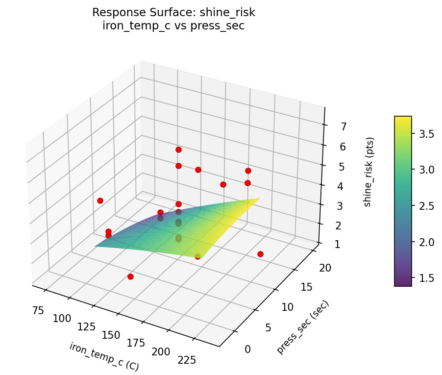
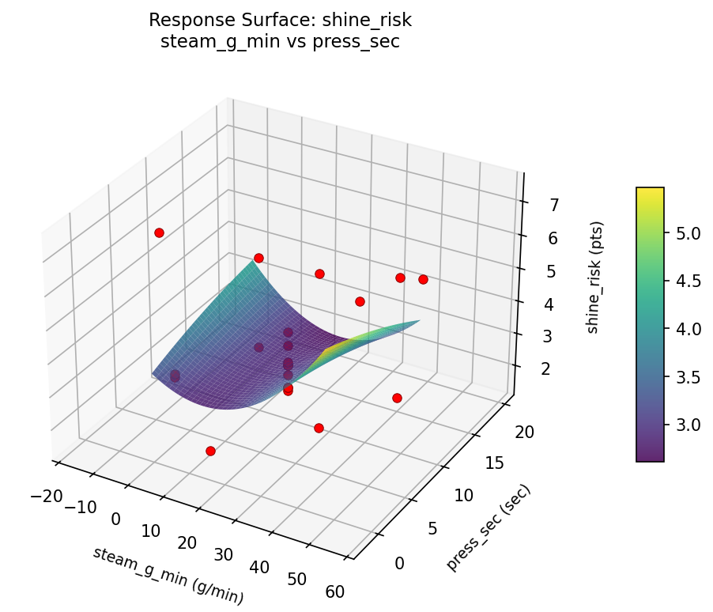

Summary
This experiment investigates garment pressing settings. Central composite design to maximize crease sharpness and minimize fabric shine by tuning iron temperature, steam output, and pressing duration.
The design varies 3 factors: iron temp c (C), ranging from 110 to 200, steam g min (g/min), ranging from 0 to 40, and press sec (sec), ranging from 3 to 15. The goal is to optimize 2 responses: crease sharpness (pts) (maximize) and shine risk (pts) (minimize). Fixed conditions held constant across all runs include fabric = wool_blend, press cloth = yes.
A Central Composite Design (CCD) was selected to fit a full quadratic response surface model, including curvature and interaction effects. With 3 factors this produces 22 runs including center points and axial (star) points that extend beyond the factorial range.
Quadratic response surface models were fitted to capture potential curvature and factor interactions. The RSM contour plots below visualize how pairs of factors jointly affect each response.
Key Findings
For crease sharpness, the most influential factors were press sec (51.5%), iron temp c (34.8%), steam g min (13.6%). The best observed value was 8.0 (at iron temp c = 155, steam g min = 20, press sec = 9).
For shine risk, the most influential factors were press sec (40.4%), steam g min (32.7%), iron temp c (26.9%). The best observed value was 1.5 (at iron temp c = 155, steam g min = 20, press sec = 9).
Recommended Next Steps
- Run confirmation experiments at the predicted optimal settings to validate the model.
- Consider whether any fixed factors should be varied in a future study.
Experimental Setup
Factors
| Factor | Low | High | Unit |
|---|
iron_temp_c | 110 | 200 | C |
steam_g_min | 0 | 40 | g/min |
press_sec | 3 | 15 | sec |
Fixed: fabric = wool_blend, press_cloth = yes
Responses
| Response | Direction | Unit |
|---|
crease_sharpness | ↑ maximize | pts |
shine_risk | ↓ minimize | pts |
Configuration
{
"metadata": {
"name": "Garment Pressing Settings",
"description": "Central composite design to maximize crease sharpness and minimize fabric shine by tuning iron temperature, steam output, and pressing duration"
},
"factors": [
{
"name": "iron_temp_c",
"levels": [
"110",
"200"
],
"type": "continuous",
"unit": "C"
},
{
"name": "steam_g_min",
"levels": [
"0",
"40"
],
"type": "continuous",
"unit": "g/min"
},
{
"name": "press_sec",
"levels": [
"3",
"15"
],
"type": "continuous",
"unit": "sec"
}
],
"fixed_factors": {
"fabric": "wool_blend",
"press_cloth": "yes"
},
"responses": [
{
"name": "crease_sharpness",
"optimize": "maximize",
"unit": "pts"
},
{
"name": "shine_risk",
"optimize": "minimize",
"unit": "pts"
}
],
"settings": {
"operation": "central_composite",
"test_script": "use_cases/186_iron_press_settings/sim.sh"
}
}
Experimental Matrix
The Central Composite Design produces 22 runs. Each row is one experiment with specific factor settings.
| Run | iron_temp_c | steam_g_min | press_sec |
|---|
| 1 | 155 | 20 | 9 |
| 2 | 200 | 0 | 15 |
| 3 | 110 | 40 | 3 |
| 4 | 155 | 56.5148 | 9 |
| 5 | 155 | 20 | 9 |
| 6 | 72.8416 | 20 | 9 |
| 7 | 155 | 20 | -1.95445 |
| 8 | 155 | 20 | 9 |
| 9 | 200 | 40 | 3 |
| 10 | 237.158 | 20 | 9 |
| 11 | 155 | 20 | 9 |
| 12 | 155 | -16.5148 | 9 |
| 13 | 155 | 20 | 9 |
| 14 | 110 | 0 | 15 |
| 15 | 155 | 20 | 9 |
| 16 | 200 | 0 | 3 |
| 17 | 155 | 20 | 19.9545 |
| 18 | 200 | 40 | 15 |
| 19 | 155 | 20 | 9 |
| 20 | 110 | 0 | 3 |
| 21 | 110 | 40 | 15 |
| 22 | 155 | 20 | 9 |
Step-by-Step Workflow
1
Preview the design
$ doe info --config use_cases/186_iron_press_settings/config.json
2
Generate the runner script
$ doe generate --config use_cases/186_iron_press_settings/config.json \
--output use_cases/186_iron_press_settings/results/run.sh --seed 42
3
Execute the experiments
$ bash use_cases/186_iron_press_settings/results/run.sh
4
Analyze results
$ doe analyze --config use_cases/186_iron_press_settings/config.json
5
Get optimization recommendations
$ doe optimize --config use_cases/186_iron_press_settings/config.json
6
Multi-objective optimization
With 2 competing responses, use --multi to find the best compromise via Derringer–Suich desirability.
$ doe optimize --config use_cases/186_iron_press_settings/config.json --multi
7
Generate the HTML report
$ doe report --config use_cases/186_iron_press_settings/config.json \
--output use_cases/186_iron_press_settings/results/report.html
Features Exercised
| Feature | Value |
|---|
| Design type | central_composite |
| Factor types | continuous (all 3) |
| Arg style | double-dash |
| Responses | 2 (crease_sharpness ↑, shine_risk ↓) |
| Total runs | 22 |
Analysis Results
Generated from actual experiment runs using the DOE Helper Tool.
Response: crease_sharpness
Top factors: press_sec (51.5%), iron_temp_c (34.8%), steam_g_min (13.6%).
ANOVA
| Source | DF | SS | MS | F | p-value |
|---|
| Source | DF | SS | MS | F | p-value |
| iron_temp_c | 4 | 4.7436 | 1.1859 | 0.448 | 0.7721 |
| steam_g_min | 4 | 1.8061 | 0.4515 | 0.170 | 0.9481 |
| press_sec | 4 | 9.3820 | 2.3455 | 0.885 | 0.5102 |
| Lack | of | Fit | 2 | 1.4781 | 0.7391 |
| Pure | Error | 7 | 18.5487 | | |
| Error | 9 | 20.0269 | 2.6498 | | |
| Total | 21 | 35.9586 | 1.7123 | | |
Pareto Chart

Main Effects Plot

Normal Probability Plot of Effects

Half-Normal Plot of Effects

Model Diagnostics

Response: shine_risk
Top factors: press_sec (40.4%), steam_g_min (32.7%), iron_temp_c (26.9%).
ANOVA
| Source | DF | SS | MS | F | p-value |
|---|
| Source | DF | SS | MS | F | p-value |
| iron_temp_c | 4 | 12.0058 | 3.0015 | 0.889 | 0.5084 |
| steam_g_min | 4 | 12.9200 | 3.2300 | 0.956 | 0.4757 |
| press_sec | 4 | 17.1600 | 4.2900 | 1.270 | 0.3501 |
| Lack | of | Fit | 2 | 0.0000 | 0.0000 |
| Pure | Error | 7 | 23.6400 | | |
| Error | 9 | 8.3542 | 3.3771 | | |
| Total | 21 | 50.4400 | 2.4019 | | |
Pareto Chart

Main Effects Plot

Normal Probability Plot of Effects

Half-Normal Plot of Effects

Model Diagnostics

Response Surface Plots
3D surfaces fitted with quadratic RSM. Red dots are observed data points.
crease sharpness iron temp c vs press sec

crease sharpness iron temp c vs steam g min

crease sharpness steam g min vs press sec

shine risk iron temp c vs press sec

shine risk iron temp c vs steam g min

shine risk steam g min vs press sec

Multi-Objective Optimization
When responses compete, Derringer–Suich desirability finds the best compromise.
Each response is scaled to a 0–1 desirability, then combined via a weighted geometric mean.
Overall Desirability
D = 0.6532
Per-Response Desirability
| Response | Weight | Desirability | Predicted | Dir |
|---|
crease_sharpness |
1.5 |
|
5.40 0.5248 5.40 pts |
↑ |
shine_risk |
2.0 |
|
2.70 0.7696 2.70 pts |
↓ |
Recommended Settings
| Factor | Value |
|---|
iron_temp_c | 200 C |
steam_g_min | 40 g/min |
press_sec | 15 sec |
Source: from observed run #15
Trade-off Summary
Sacrifice = how much worse than single-objective best.
| Response | Predicted | Best Observed | Sacrifice |
|---|
shine_risk | 2.70 | 1.50 | +1.20 |
Top 3 Runs by Desirability
| Run | D | Factor Settings |
|---|
| #1 | 0.6473 | iron_temp_c=110, steam_g_min=0, press_sec=15 |
| #5 | 0.6472 | iron_temp_c=110, steam_g_min=40, press_sec=15 |
Model Quality
| Response | R² | Type |
|---|
shine_risk | 0.0897 | linear |
Full Multi-Objective Output
============================================================
MULTI-OBJECTIVE OPTIMIZATION
Method: Derringer-Suich Desirability Function
============================================================
Overall desirability: D = 0.6532
Response Weight Desirability Predicted Direction
---------------------------------------------------------------------
crease_sharpness 1.5 0.5248 5.40 pts ↑
shine_risk 2.0 0.7696 2.70 pts ↓
Recommended settings:
iron_temp_c = 200 C
steam_g_min = 40 g/min
press_sec = 15 sec
(from observed run #15)
Trade-off summary:
crease_sharpness: 5.40 (best observed: 8.00, sacrifice: +2.60)
shine_risk: 2.70 (best observed: 1.50, sacrifice: +1.20)
Model quality:
crease_sharpness: R² = 0.0636 (linear)
shine_risk: R² = 0.0897 (linear)
Top 3 observed runs by overall desirability:
1. Run #15 (D=0.6532): iron_temp_c=200, steam_g_min=40, press_sec=15
2. Run #1 (D=0.6473): iron_temp_c=110, steam_g_min=0, press_sec=15
3. Run #5 (D=0.6472): iron_temp_c=110, steam_g_min=40, press_sec=15
Full Analysis Output
=== Main Effects: crease_sharpness ===
Factor Effect Std Error % Contribution
--------------------------------------------------------------
press_sec 3.4000 0.2790 51.5%
iron_temp_c 2.3000 0.2790 34.8%
steam_g_min 0.9000 0.2790 13.6%
=== ANOVA Table: crease_sharpness ===
Source DF SS MS F p-value
-----------------------------------------------------------------------------
iron_temp_c 4 4.7436 1.1859 0.448 0.7721
steam_g_min 4 1.8061 0.4515 0.170 0.9481
press_sec 4 9.3820 2.3455 0.885 0.5102
Lack of Fit 2 1.4781 0.7391 0.279 0.7646
Pure Error 7 18.5487 2.6498
Error 9 20.0269 2.6498
Total 21 35.9586 1.7123
=== Summary Statistics: crease_sharpness ===
iron_temp_c:
Level N Mean Std Min Max
------------------------------------------------------------
110 4 5.0750 0.7274 4.0000 5.6000
155 12 5.4000 1.5580 2.5000 8.0000
200 4 4.5750 0.9878 3.5000 5.6000
237.158 1 4.1000 0.0000 4.1000 4.1000
72.8416 1 6.4000 0.0000 6.4000 6.4000
steam_g_min:
Level N Mean Std Min Max
------------------------------------------------------------
-16.5148 1 5.7000 0.0000 5.7000 5.7000
0 4 4.8500 0.9037 3.5000 5.4000
20 12 5.3250 1.6277 2.5000 8.0000
40 4 4.8000 0.9238 4.0000 5.6000
56.5148 1 5.7000 0.0000 5.7000 5.7000
press_sec:
Level N Mean Std Min Max
------------------------------------------------------------
-1.95445 1 8.0000 0.0000 8.0000 8.0000
15 4 4.6000 1.0100 3.5000 5.6000
19.9545 1 5.3000 0.0000 5.3000 5.3000
3 4 5.0500 0.7188 4.0000 5.6000
9 12 5.1667 1.4131 2.5000 6.8000
=== Main Effects: shine_risk ===
Factor Effect Std Error % Contribution
--------------------------------------------------------------
press_sec 4.0500 0.3304 40.4%
steam_g_min 3.2750 0.3304 32.7%
iron_temp_c 2.7000 0.3304 26.9%
=== ANOVA Table: shine_risk ===
Source DF SS MS F p-value
-----------------------------------------------------------------------------
iron_temp_c 4 12.0058 3.0015 0.889 0.5084
steam_g_min 4 12.9200 3.2300 0.956 0.4757
press_sec 4 17.1600 4.2900 1.270 0.3501
Lack of Fit 2 0.0000 0.0000 0.000 1.0000
Pure Error 7 23.6400 3.3771
Error 9 8.3542 3.3771
Total 21 50.4400 2.4019
=== Summary Statistics: shine_risk ===
iron_temp_c:
Level N Mean Std Min Max
------------------------------------------------------------
110 4 2.7500 0.3317 2.3000 3.0000
155 12 3.9833 1.8473 1.5000 7.4000
200 4 2.6250 0.4349 2.2000 3.0000
237.158 1 2.5000 0.0000 2.5000 2.5000
72.8416 1 5.2000 0.0000 5.2000 5.2000
steam_g_min:
Level N Mean Std Min Max
------------------------------------------------------------
-16.5148 1 5.9000 0.0000 5.9000 5.9000
0 4 2.7500 0.3317 2.3000 3.0000
20 12 3.8750 1.8246 1.5000 7.4000
40 4 2.6250 0.4349 2.2000 3.0000
56.5148 1 3.1000 0.0000 3.1000 3.1000
press_sec:
Level N Mean Std Min Max
------------------------------------------------------------
-1.95445 1 6.7000 0.0000 6.7000 6.7000
15 4 2.6500 0.4041 2.3000 3.0000
19.9545 1 2.9000 0.0000 2.9000 2.9000
3 4 2.7250 0.3775 2.2000 3.0000
9 12 3.8250 1.7152 1.5000 7.4000
Optimization Recommendations
=== Optimization: crease_sharpness ===
Direction: maximize
Best observed run: #18
iron_temp_c = 155
steam_g_min = 20
press_sec = 9
Value: 8.0
RSM Model (linear, R² = 0.1472, Adj R² = 0.0051):
Coefficients:
intercept +5.1773
iron_temp_c -0.5904
steam_g_min -0.0700
press_sec +0.0866
RSM Model (quadratic, R² = 0.2448, Adj R² = -0.3216):
Coefficients:
intercept +4.9825
iron_temp_c -0.5904
steam_g_min -0.0700
press_sec +0.0866
iron_temp_c*steam_g_min +0.3250
iron_temp_c*press_sec -0.4000
steam_g_min*press_sec +0.1500
iron_temp_c^2 +0.0924
steam_g_min^2 -0.0276
press_sec^2 +0.2274
Curvature analysis:
press_sec coef=+0.2274 convex (has a minimum)
iron_temp_c coef=+0.0924 negligible curvature
steam_g_min coef=-0.0276 negligible curvature
Notable interactions:
iron_temp_c*press_sec coef=-0.4000 (antagonistic)
iron_temp_c*steam_g_min coef=+0.3250 (synergistic)
Predicted optimum (from linear model, at observed points):
iron_temp_c = 72.8416
steam_g_min = 20
press_sec = 9
Predicted value: 6.2553
Surface optimum (via L-BFGS-B, linear model):
iron_temp_c = 110
steam_g_min = 0
press_sec = 15
Predicted value: 5.9243
Model quality: Weak fit — consider adding center points or using a different design.
Factor importance:
1. iron_temp_c (effect: 3.1, contribution: 53.4%)
2. steam_g_min (effect: 1.9, contribution: 32.8%)
3. press_sec (effect: 0.8, contribution: 13.8%)
=== Optimization: shine_risk ===
Direction: minimize
Best observed run: #20
iron_temp_c = 155
steam_g_min = 20
press_sec = 9
Value: 1.5
RSM Model (linear, R² = 0.1734, Adj R² = 0.0357):
Coefficients:
intercept +3.5000
iron_temp_c -0.6409
steam_g_min -0.3083
press_sec +0.3012
RSM Model (quadratic, R² = 0.3483, Adj R² = -0.1406):
Coefficients:
intercept +3.4316
iron_temp_c -0.6409
steam_g_min -0.3083
press_sec +0.3012
iron_temp_c*steam_g_min +0.9500
iron_temp_c*press_sec -0.3000
steam_g_min*press_sec -0.0250
iron_temp_c^2 +0.1642
steam_g_min^2 -0.1058
press_sec^2 +0.0442
Curvature analysis:
iron_temp_c coef=+0.1642 convex (has a minimum)
steam_g_min coef=-0.1058 concave (has a maximum)
press_sec coef=+0.0442 negligible curvature
Notable interactions:
iron_temp_c*steam_g_min coef=+0.9500 (synergistic)
Predicted optimum (from linear model, at observed points):
iron_temp_c = 110
steam_g_min = 0
press_sec = 15
Predicted value: 4.7504
Surface optimum (via L-BFGS-B, linear model):
iron_temp_c = 200
steam_g_min = 40
press_sec = 3
Predicted value: 2.2496
Model quality: Weak fit — consider adding center points or using a different design.
Factor importance:
1. steam_g_min (effect: 2.5, contribution: 39.2%)
2. iron_temp_c (effect: 2.3, contribution: 36.5%)
3. press_sec (effect: 1.5, contribution: 24.3%)